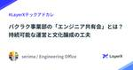

LayerX エンジニアブログ
https://tech.layerx.co.jp/
LayerX の エンジニアブログです。
フィード

リクエストログミドルウェアに後続ロジックから情報を渡したいときの2つのアプローチ #LayerXテックアドカレ 2
2
LayerX エンジニアブログ
この記事は、LayerX Tech Advent Calendar 2024 の8日目の記事です。 tech.layerx.co.jp バクラクビジネスカード開発チーム Tech Lead の budougumi0617 です。 今回はGoでWebアプリケーションを作る際に利用するHTTPミドルウェアでリクエストログを出力する際のTipsです。 HTTPハンドラー内のビジネスロジックで取得・導出した情報をリクエストに付与する方法を解説します。 TL;DR Go言語でWebアプリケーションを開発する際、よくある手法としてミドルウェアでユーザーIDやテナントIDといった情報を持ったリクエストログ（…
9時間前

MySQL の UPDATE で IN 句の要素が多すぎてデッドロックした話 #LayerXテックアドカレ 75
LayerX エンジニアブログ
この記事は、LayerX Tech Advent Calendar 2024 の7日目の記事です。 tech.layerx.co.jp こんにちは。バクラクビジネスカード開発チーム エンジニアの iwamatsu です。 何か書くことないかな〜と頭を悩ませていたところ、見たことのない不思議なデッドロックに出くわしたので、今回はそれについて書こうと思います。 実行環境 バージョン: MySQL 8.0.39 ストレージエンジン: InnoDB トランザクション分離レベル: REPEATABLE READ 発生した事象 以下のようなユーザーテーブルがあるとします。 CREATE TABLE `us…
2日前

【2024年最新】スクラムを効率化するNotion活用術：ストーリーポイント管理とダッシュボード設計 4
LayerX エンジニアブログ
この記事は、LayerX Tech Advent Calendar 2024 の ６ 日目の記事です。 tech.layerx.co.jp ▼ 今回お話しすること こんにちは！バクラク事業部 ソフトウェアエンジニアの @minako-ph です 🐱 弊社では全社的に Notion を活用し、申請・経費精算チームではスクラム開発を採用しています。2週間ごとのスプリントを回す中で、Notionを使った進捗管理や作業効率向上に取り組んでいます。 1年前に執筆した Notionでスプリントのあれこれをダッシュボードで可視化する という記事では、Notionを活用したスクラム管理の仕組みを紹介しました。…
2日前

Vertex AI PIpelinesでの実験を加速させるためのTIPS #LayerXテックアドカレ 20
LayerX エンジニアブログ
この記事は、LayerX Tech Advent Calendar 2024 の 5 日目の記事です。 tech.layerx.co.jp こんにちは。バクラク事業部のAI-OCRグループでTech Leadをしている島越 (@nt_4o54)です。 今回は、Vertex AI Pipelinesを用いてチームで実験を行う際のTIPS的なものを紹介しようと思います。 なお、Vertex AI Pipelines自体の詳細な説明については割愛します。 過去にもVertex AI Pipelinesについての記事をいくつか公開してるので、(ちょっと情報が古いですが)興味があればそちらもご覧ください…
3日前

バクラクにおける可観測性向上の取り組み #LayerXテックアドカレ 4
LayerX エンジニアブログ
バクラク事業部 Platform Engineering 部 DevOps チームの uehara です。 LayerX Tech Advent Calendar 2024 の4日目となる本記事では、バクラクにおける可観測性向上の取り組みについて紹介します。 はじめに 2024年10月30日に行われたイベントで同じタイトルの発表をさせていただきました。 layerx.connpass.com speakerdeck.com 当日の発表では時間の関係で盛り込めなかった部分も含めて紹介します。 バクラクが抱えていた可観測性の課題 LayerX は コンパウンドスタートアップ として新しい事業やプロ…
5日前

暇だし過去15年間のサイバーセキュリティな大統領令を見る（~2017） 4
LayerX エンジニアブログ
LayerX Tech Advent Calendar 2024 の4日目の記事です。 LayerX Fintech事業部（三井物産デジタル・アセットマネジメント（MDM）に出向）で、セキュリティ、インフラ、情シス、ヘルプデスク、ガバナンス・コンプライアンスエンジニアリングなどを担当している @ken5scal です。 来年度1月より米国 大統領の新政権が始まりますね。 大統領の持つ特権の一つに、大統領令があります。 これは、法的な拘束力を持ち、議会の承認を得ずに実施することができる *1 権限です。 対象は様々な分野に及び、昨今?はサイバーセキュリティ（Cybersecurity）にも及びま…
5日前

LayerX バクラク事業部における探索的テストへの取り組み #LayerXテックアドカレ 5
LayerX エンジニアブログ
この記事は、LayerX Tech Advent Calendar 2024 の 3 日目の記事です。 tech.layerx.co.jp こんにちは。 LayerX バクラク事業部 QAチームマネージャーの nao（@TestingGolem）です。 この記事では、私が所属するバクラク事業部での探索的テストの取り組みについてご紹介させていただきます。 イントロダクション ソフトウェア開発において、リリース前のバグ発見や品質向上のための仕様の改善に向けたテスト戦略の策定は昨今のプロダクト開発に不可欠です。LayerXでは、「探索的テスト（Exploratory Testing）」を活用し、チー…
6日前

Pull Request を止めないために #LayerXテックアドカレ 7
LayerX エンジニアブログ
この記事は、LayerX Tech Advent Calendar 2024 の 2 日目の記事です。 tech.layerx.co.jp こんにちは。 LayerX バクラク事業部 バクラクビジネスカード開発チームEMの高江（@shnjtk）です。 前回の私の記事では、私が所属するチームで策定したコードレビューガイドラインについてご紹介しました。 tech.layerx.co.jp 今回の記事では、チームとして Pull Request（以下PR）のレビューを円滑に行うために、どのような仕組みを導入しているかをご紹介します。 PR を止めてはいけない これはバクラクの開発を始めた当初から大事…
6日前

バクラク事業部の「エンジニア共有会」とは？持続可能な運営と文化醸成の工夫 #LayerXテックアドカレ 3
LayerX エンジニアブログ
この記事は、LayerX Tech Advent Calendar 2024 の 1 日目の記事です。 tech.layerx.co.jp エンジニア共有会とは 共有会の変遷と目的の進化 初期の取り組み 目的の明確化とビジョンの設定 Goals / Non-Goals の定義 ミーティングオーナーの引き継ぎと運営の体制 ミーティングオーナーの変遷 持続可能な運営のための工夫 共有会のコンテンツと特徴的なコーナー 対応必須アナウンス そぼぎコーナー 今週の ADR・Design Docs エンジニア共有会を通じて得た気づき 最後に Engineering Office で主に技術広報を担当してい…
7日前

LayerX Tech Advent Calendar 2024 はじまります！ #LayerXテックアドカレ
LayerX エンジニアブログ
こんにちは。すべての経済活動を、デジタル化したい @serima です。 今年は、技術広報としてエンジニア向けのカンファレンスへのブース出展および各種イベントの企画・運営などを行ってきました。 さてさて、2024年も残すところあとわずか。 今年もLayerXでは、LayerX Tech Advent Calendar 2024を開催します！ 今回は、バクラク事業部をはじめ、Fintech事業部、AI・LLM事業部、コーポレートエンジニアリング室、HRなど、LayerXのさまざまな事業部・チームから、多彩なメンバーが参加予定です。 社内でアドベントカレンダーへの投稿者を募ったところ、なんと25件…
9日前
JSConf JP 2024 に参加しました！ #jsconfjp
LayerX エンジニアブログ
こんにちは。バクラク事業部エンジニアの omori (@onsd_) です。 先日開催された JSConf JP 2024 に参加しました。 本記事では、LayerXとJSConf の関わりの共有と、セッションの一部について振り返りを行っておりますので、ぜひご覧ください。 JSConf JP とは JSConf JP 2024 は、日本最大級の JavaScript カンファレンスであり、一般社団法人 Japan Node.js Association が主催する JavaScript フェスティバルです。 今年で日本開催 5 回目を迎え、日本の Web 開発者と海外の Web 開発者をつなぐ…
14日前
新卒目線で見たAI・LLM事業部とAi Workforceのプロダクト開発
LayerX エンジニアブログ
9月に入社したエンジニアの藤田と申します。AI・LLM事業部で新卒として働くとどのような業務ができるのか・その魅力をお話しいたします。 AI・LLM事業部が開発するプロダクト「Ai Workforce」 AI・LLM事業部では、主にエンタープライズのお客さま向けに、幅広い業務の効率化を対象としたAIプラットフォーム「Ai Workforce」を開発しています。 実現できること・機能の詳細については、以下をご参考ください。 getaiworkforce.com 「AIで特定の業務を自動化できるかどうか」の二極化ではなく人間とAIが協力し合いながら業務を進められる設計が素晴らしい点の一つだと感じて…
16日前
LayerX AI・LLM事業部とプロダクトの魅力と伸びしろ：最近ジョインしたPdMの視点から
LayerX エンジニアブログ
みなさん、こんにちは。AI・LLM事業部のプロダクトマネージャー（PdM）として10月にジョインした稲生です。 簡単な経歴として、直近はtoCのECサービスのPdM、それ以前はエンジニアとしてアプリやウェブサービスを中心に開発を行ってきました。 今回は、最近ジョインした立場からAI・LLM事業部やプロダクトの魅力についてお伝えしたいと思います。 1. プロダクト（Ai Workforce）について AI・LLM事業部が提供するAi Workforceは、企業向けのAI活用プラットフォームです。 サービスの概要は以下の紹介サイトからもご確認いただけますが、「企業と成長を共にするAIプラットフォー…
17日前
JSConf JP 2024にPremium Sponsorとして協賛します & 2名登壇します！ #jsconfjp
LayerX エンジニアブログ
LayerX は JSConf JP 2024 に Premium Sponsor として協賛します。また、LayerX のソフトウェアエンジニアの2名が登壇も予定しています。 あわせて現地でのブース出展もおこない、主にバクラク事業部のソフトウェアエンジニアたちが参加者の皆さまとお話できるのを楽しみにしています。 LayerX として初めての JSConf JP への協賛となり、JavaScript コミュニティへの感謝と貢献を形にできる機会として非常に楽しみにしています。 登壇内容 LayerX からはバクラク事業部 バクラク申請・経費精算チームの @minako__ph とバクラク請求書受…
18日前
7夜連続で、技術イベントのアーカイブ動画を公開します
LayerX エンジニアブログ
こんにちは！すべての経済活動を、デジタル化したい Engineering Office の @serima です。 LayerX では、今年の 5 月にオフィスを東銀座に移転して以来、エンジニアリングをテーマにした数多くのイベントを LayerX イベントスペースで実施してきました。 layerx.co.jp この度、それらのイベントアーカイブ動画を LayerX 公式 YouTube チャンネルにて 7夜連続公開 することにしました。 以下、公開スケジュールや詳細をお伝えします。 動画公開スケジュール 以下の日程にて、毎日 19時 に公開を予定しています。お気に入りのコンテンツを見逃さないよ…
18日前
FlutterKaigi 2024にシルバースポンサーとして協賛します & 1名登壇します！
LayerX エンジニアブログ
LayerX は、FlutterKaigi 2024にシルバースポンサーとして協賛します。 また、LayerX のソフトウェアエンジニアが1名登壇を予定しています。 FlutterKaigi 2024とは FlutterKaigiは、日本国内で開催されるFlutter技術に特化したカンファレンスです。2021年に初開催され、今年は初の2日間連続での開催となっています。 詳細は公式サイトをご覧ください。 2024.flutterkaigi.jp 協賛の背景 LayerXが提供するバクラクのモバイルアプリはFlutterを利用して開発を行っており、私たちは技術コミュニティから日々たくさんの知見を頂…
19日前
「間接的な精度評価」によるチューニングの効率化
LayerX エンジニアブログ
はじめに こんにちは！LayerX AI・LLM事業部でマネージャーを務めていますエンジニアの恩田（ さいぺ ）です。 AI・LLM事業部では「Ai Workforce」というプロダクトを開発しています。 エンタープライズ企業のドキュメントワークを効率化する生成AIプラットフォームと銘を打っており、そのユースケースは多岐にわたるのですが、その一つに論文からの項目抽出があります。 （出典）Jin, Bowen, et al. "Long-Context LLMs Meet RAG: Overcoming Challenges for Long Inputs in RAG." arXiv prep…
20日前
Ai Workforceのインフラ構成
LayerX エンジニアブログ
こんにちは、LayerX AI・LLM事業部テックリードの須藤です。 今回は、AI・LLM事業部が提供する「Ai Workforce」のインフラ構成について紹介します。 先日、Ai Workforceの紹介サイトがついに公開されました！ getaiworkforce.com また、プロダクト開発チームも以下の記事で紹介されていますのでこちらも合わせてご覧ください。 tech.layerx.co.jp Microsoft Azureを選定した理由 Ai Workforceのクラウド基盤にはMicrosoft Azureを採用しています。その主な理由は以下の2点です。 Azure OpenAIとの…
23日前
Ai Workforceの開発を支えるチームとプロセスの現在地
LayerX エンジニアブログ
AI・LLM事業部プロダクト開発グループマネージャーの篠塚(@shinofumijp)です。 本日、私たちが開発している生成AIプロダクト「Ai Workforce」の紹介サイトを公開しました。 getaiworkforce.com プロダクトページの公開に合わせて本記事ではAi Workforceを開発するチームについて紹介します。 企業と共に成長するAIプラットフォーム「Ai Workforce」 Ai Workforceは企業がAIを使いこなすためのプラットフォームです。 Ai Workforceでできること 幅広いお客様の業務を効率化するAIワークフロー、AIワークフローが整理した情報…
24日前
バクラク事業部のテストピラミッド設計
LayerX エンジニアブログ
こんにちは、バクラク事業部QAチームのteyamaguです。今回は、私たちが自動テストの整備を進める上で指針として設計した「バクラク事業部のテストピラミッド」について紹介します。このピラミッドは、効果的な自動テストを構築するために、自動テストのガイドラインとして機能しています。 バクラク事業部におけるテストピラミッドの概要 バクラク事業部では、1年前からフロントエンド・バックエンドの統合的な自動テストの整備を進めています。自動テストにおける大きな課題の1つが「どのテストで何を確認すべきか？」です。そこでバクラク事業部では、事業部全体で納得できる形のテストピラミッドを設計し、これを自動テストの指…
1ヶ月前
AWS Security Lakeのお金でﾁｮｯﾄ困った話
LayerX エンジニアブログ
LayerX Fintech事業部（三井物産デジタル・アセットマネジメント（MDM）に出向）で、セキュリティ、インフラ、情シス、ヘルプデスク、ガバナンス・コンプライアンスエンジニアリングなどを担当している @ken5scal です。 本件はLayerXが主催するコーポレートエンジニアリング・情シスに関するコミュニティイベント「CorpEn Night #1」で発表した内容をまとめたものです。 Fintech事業部では、サイバーセキュリティ管理の検出・監視基盤として、一般的なSIEM製品ではなくAWS Security Lakeを採用しました。これにより、セキュリティイベントだけでなく情報資産も…
1ヶ月前
インターンでDevSecOpsな脆弱性管理システムの開発に取り組みました！
LayerX エンジニアブログ
※本ブログに取り組んだ本人は既に卒業済みのため、メンターである@ken5scal（鈴木研吾）が本人からいただいたドラフトを一部編集した上で公開しています。 ※ドラフト自体は7月にいただいていたのですが、手違いにより公開が遅れてしまいました。 こんにちは、三井物産デジタル・アセットマネジメント(MDM) のコーポレートシステム部にインターンとして参加させていただいた海原（@hrt_k2002)です。 3ヶ月弱のインターンシップを通して、ソフトウェアが抱えるリスクについての知見を深め、DevSecOpsの手法を取り入れた脆弱性管理システムの開発に取り組みました。 きっかけ 大学で数理工学を学び、大…
2ヶ月前
機械学習モデルとの付き合い方 ー LayerXサマーインターンシップ受け入れを通じて感じたこと
LayerX エンジニアブログ
はじめに 深澤 (@qluto) です。 LayerXの機械学習グループでは、今年8月から9月にかけて、初のサマーインターンシップを開催しました。参加者のスケジュールに合わせた柔軟なプログラムで、3週間という短期間ながら、機械学習技術を核とした機能開発に取り組んでいただきました。 インターンシップの運営を通じて、機械学習エンジニアリングにおける特有の課題や、その解決方法について多くの学びがありました。本記事では、その経験を踏まえ、現役の機械学習エンジニアや学生の皆さん、そしてLLM（大規模言語モデル）のような非決定的な振る舞いをする機械学習モデルをプロダクトに組み込もうとしているソフトウェアエ…
2ヶ月前
【Data-centric AI】Confident Learningによるデータセットの品質改善【固有表現抽出編】
LayerX エンジニアブログ
はじめに こんにちは。機械学習エンジニアの上川です。LayerXでは、バクラクのAI-OCR機能の精度改善に取り組んでいます。本記事では、Data-centric AIにまつわる技術を用いて、AI-OCRデータセットの品質改善を行うための技術検証を行なったのでその紹介をします。 AI-OCRデータセットのアノテーション AI-OCRとは、国税関係書類に対してOCRを実行し、入力のサジェストを行うことでユーザーが書類の内容を手入力する手間を削減する機能です。例えば、領収書の日付、金額、取引先名を自動で読み取り、ユーザーにサジェストします。 AI-OCRでは内製の機械学習モデルを利用しているため、…
2ヶ月前
【YAPC::Hakodate 2024 参加レポート】LayerXにおけるLLMのプロダクト活用 #yapcjapan
LayerX エンジニアブログ
こんにちは、LayerX Fintech事業部エンジニアの伊藤( @etaroid )です。 この記事は、2024年10月4日(金) ~ 2024年10月6日(日)に北海道函館市で開催されたYAPC::Hakodate 2024への参加レポートです。 今回LayerXは、プラチナスポンサー＆学生支援スポンサーとして協賛させていただき、企業ブースの出展、LayerXが取り組んでいるLLM（大規模言語モデル）のプロダクト活用についての発表などを行いました。 tech.layerx.co.jp 会場は、多くのエンジニア、学生、スポンサー企業の方々が集まり、技術についてディスカッションする熱気で溢れか…
2ヶ月前
LayerXはYAPC::Hakodate 2024にプラチナスポンサー＆学生支援スポンサーとして協賛します
LayerX エンジニアブログ
Engineering Officeの@serimaです。 LayerX は、YAPC::Hakodate 2024にプラチナスポンサー＆学生支援スポンサーとして協賛します。 2024年2月に広島で行われたYAPC::Hiroshimaでも同様に協賛していたので、2回連続での協賛となります。 tech.layerx.co.jp YAPCについて YAPCはYet Another Perl Conferenceの略で、Perlを軸としたITに関わる全ての人のためのカンファレンスです。 Perlだけにとどまらない技術者たちが、好きな技術の話をし交流するカンファレンスで、技術者であれば誰でも楽しめる…
2ヶ月前
LayerXにおけるOpenMetadataのインフラ構成とコスト削減について
LayerX エンジニアブログ
こんにちは！バクラク事業部 機械学習・データ部 データチームの@TrsNiumです。 我々のデータ基盤では、データカタログソリューションとしてOpenMetadataを導入し、データのビジネス的な意味（ビジネスメタデータ）、運用状況や品質情報（オペレーショナルメタデータ）、技術的な属性や構造（テクニカルメタデータ）を一元的に管理しています。OpenMetadataの導入により、多様なデータベース、BI、CRMとの連携が実現し、データ管理の効率化と利用統計の可視化が可能となりました。さらに、データの検索性が大幅に向上し、データガバナンスの強化にも寄与しています。 OpenMetadataは、デー…
2ヶ月前
本番同様のデータを扱えるdbtテスト環境をSnowflakeで構築する方法
LayerX エンジニアブログ
こんにちは！バクラク事業部 機械学習・データ部 データチームの@TrsNiumです。 弊社ではBigQueryとSnowflake上にデータ基盤を構築しています。データチームは、このデータ基盤上に集積したデータを集計し、データコンポーネント化して、分析や機械学習の用途に利用しやすい形で提供しています。この過程で、データの集計やデータコンポーネントの作成には、dbt（data build tool）を活用しています。 データの集計やデータコンポーネントの編集・作成は慎重に行う必要があります。集計方法の誤りは、業務ダッシュボードの数値ズレや機械学習モデルの推論精度低下につながる可能性があるためです…
3ヶ月前
意思決定に基づくはずのオペレーションを追跡し、監査を効率化する話
LayerX エンジニアブログ
LayerX Fintech事業部*1で、セキュリティ、インフラ、情シス、ヘルプデスク、ガバナンス・コンプラエンジニアリングなど色々やってる @ken5scal です。 ログ一元管理の本質とSIEMの限界 - データ基盤への道 - LayerX エンジニアブログ SIEMからデータ基盤へ - Amazon Security Lakeを試してる話 - LayerX エンジニアブログ 現在は、当社の方針に基づき採択したAWS Security Lakeを前提にしたセキュリティ監視基盤をもとに、 当社事業年度における２Qの目標ということで、実際のユースケースに取り組むこととしました。 シナリオ選び …
3ヶ月前
dbt Python model × Snowparkで外部APIのデータを取得する
LayerX エンジニアブログ
はじめに dbt（data build tool） Python modelとSnowflakeのSnowparkを活用することで、データ取得と変換の開発体験の向上を実現できます。SQLは宣言的な言語であり、複雑な手続き的な処理を書くには限界があります。しかし、dbt Python modelはそのSQLの弱点を補完してくれるので、非常に便利です。 さらに、Snowflakeの外部アクセス統合を使うことで、APIを叩いて外部のデータを取得することも簡単に実現できます。これにより、さまざまなデータソースをシームレスに取り込むことが可能になります。 本記事では、dbt Python modelとS…
3ヶ月前